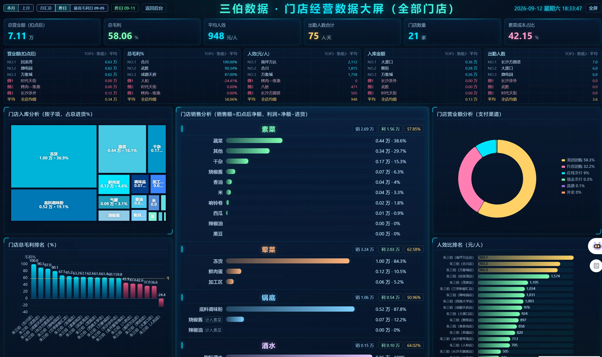

WNTC / 数字产品
商业分析 · 数据可视化
数据&分析
看见数据，
读懂经营。
面向购物中心、连锁门店与公共平台，围绕不同业务场景组织数据，让复杂信息清晰可读。
01 / 产品概览
从数据到洞察看清经营全貌，
读懂每个细节。
将业务指标组织成清晰的可视化看板。以下朱三伯火锅看板汇集营业额、毛利、进货、支付渠道与人效，从全店汇总到门店对比，呈现经营的不同侧面。
02 / 产品看板
朱三伯火锅一张看板，
看见完整经营。
工作室提供的实际产品看板截图。
点击图片可查看大图。

01
经营总览
集中查看营业额、毛利、人效与出勤情况。
02
门店对比
通过门店排名与全店均值，了解不同门店的经营差异。
03
经营结构
结合进货品类、销售构成与支付渠道，分析经营结构。
03 / 客户案例
连接不同业务场景不同的业务，
同样清晰的洞察。
- 01
朱三伯火锅
连锁门店 · 经营数据可视化
- 02
重庆悦地购物中心
购物中心 · 用户访问与画像分析
- 03
四川某省市公共平台数据
公共平台 · 匿名案例